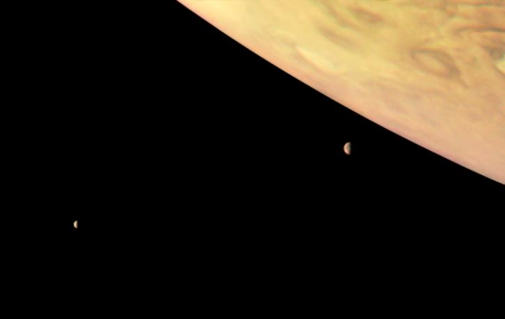

Júpiter, o maior planeta do nosso Sistema Solar, é uma imponente esfera gasosa que intriga e fascina astrônomos e emtusiasmados há séculos. Com sua massa colosal majestosa, júpiter desempenha um papel fundamental na dinâmica do nosso sistema planetário. Neste artigo, mergulharemos nas caracteísticas e curiosidades desse gigante gasoso.
Júpiter é um planeta gasoso, constituido principalmente de hidrogênio e hélio, com traços de outras substâncias, como metano e amônia. Essa composição o torna distinto dos planetas rochosos, como a Terra. Com um diâmetro de aproximadamente 142.984 Km, Júpiter é mais de 11 vezes maiorque a do nosso planeta.

imagem source: NASA
Uma das caracteísticas mais marcantes de Júpiter é a Grande Mancha vermelha, uma gigantesca tempestade que ocorre na sua atmosfera há séculso. A Grande Mancha Vermelha é um fenômeno persistente e tem sido observada desde o Século XVII. Essa tempestade é tão grande que poderia engolir três Terras. Apesar de sua longevidade, a causa exata de sua formação ainda é objeto de estudo e pesquisa
Além dos anéis, Júpiter é cercado por um vasto conjunto de luas. Atualemte, mais de 80 luas foram identificadas
imagem source: NASA
Júpiter tem sido objeto de estudo e exploração e exploração pelas agências espaciais há várias décadas. A sonda espacial Voyager 1 fez uma pasagem próxima por Júpiter em 1979, fornecendo as primeiras imagens detalhadas do planeta e suas luas. Mais tarde, as milhões Galileo, Juno e outras trouxeram dados cruciais sobre a estrutura interna de Júpiter, seu campo magnético e suas tempestades.
Júpiter é verdadeiramente um colosso celestial que continua a intrigar os cientistas e entusiastas do espaço. Sua massa, tamanho e complexidade atmósferica o tornam um laboratório natural para entender a formação e aevolução de planetas gasosos. Além disso, suas lutas e termpestades proporcionam uma visão fascianante da dinâmica planétaria e do potencialde mundos alienígenas. Á medida que a exploração espacial continua avançando, é provável que Júpiter ainda reserve muitas surpresas e segredos a serem revelados.